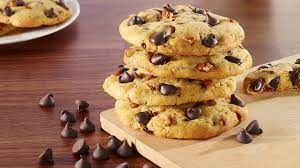

Cookies

Description
This chocolate chip cookie recipe is truly the best.
These chocolate chip cookies are beloved because they’re soft,
chewy, and absolutely irresistible. This top-rated recipe
for chocolate chip cookies will quickly become your go-to.
Ingredients
- 1 cup butter, softned
- 1 cup white sugar
- 1 cup packed brown sugar
- 2 eggs
- 2 teaspoons vanilla extract
- 1 teaspoon backing soda
- 2 teaspoon hot water
- 1/2 teaspoon salt
- 3 cups all-purpose flour
- 2 cups semisweet chocolate chips
- 1 cup chopped walnuts
Steps
- Gather your ingredients, making sure your butter is softned
and your eggs are room temperature.
- Preheat the oven to 175 degrees C
- Beat butter, white sugar, and brown sugar with an electric mixer
in a large bowl until smooth.
- Beat in eggs, one at a time, then stir in vanilla.
- Dissolve baking soda in hot water. Add to batter along with salt
- Stir in flour, chocolate chips, and walnuts.
- Drop spoonfuls of dough 2 inches apart onto ungreased baking sheets.
- Bake in the preheated oven until edges are nicely browned, about 10 minutes.
- Cool on the baking sheets briefly before removing to a wire rack
to cool completely.
- Store in an airtight container or serve immmediately and enjoy!
Home